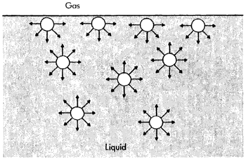
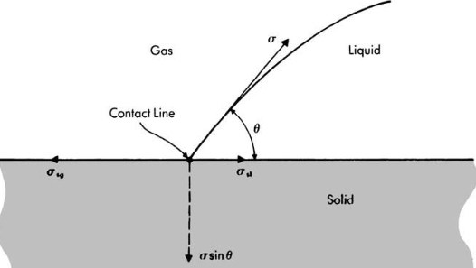
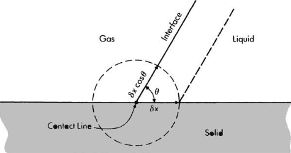
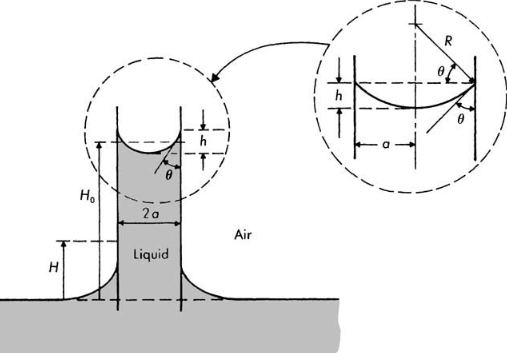

Surface tension and interfacial tension arise because of the differences in attractive intermolecular forces at gas-liquid and liquid-liquid interfaces, respectively. For clarity, the following discussion emphasizes surface tension at gas-liquid interfaces; however, the results are equally applicable to interfacial tension at liquid-liquid interfaces
as a gas-liquid interface is approached from the liquid side, the attractive forces are not felt equally because there are many fewer liquid-phase molecules near the interface. Thus there tends to be an unbalanced attraction toward the interior of the liquid on the molecules near the gas-liquid boundary.
This unbalanced attraction leads to surface tension and a pressure increment across a curved gas-liquid interface that must be properly accounted for when conserving fluid momentum
Attractive forces between molecules at surface and in interior of a liquid for a plane liquid-gas interfaceStatic equilibrium of a liquid drop in a gas at line of contact with a horizontal solid surfaceTranslation from left to right of a liquid wedge interfaceLiquid rise in an open capillary